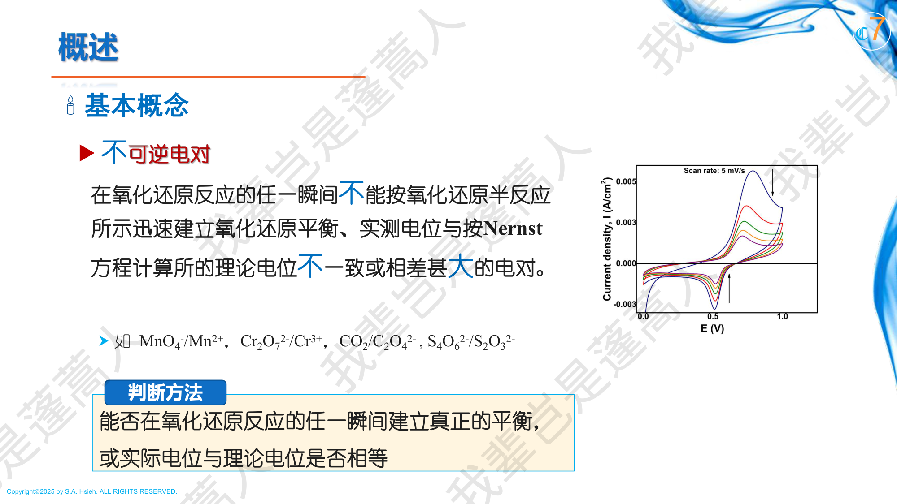
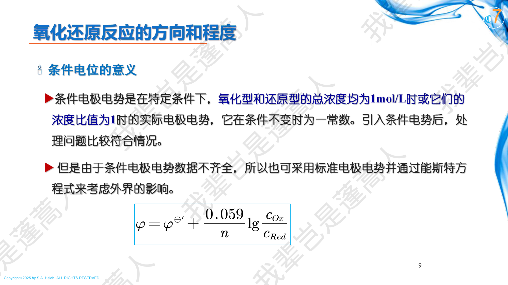
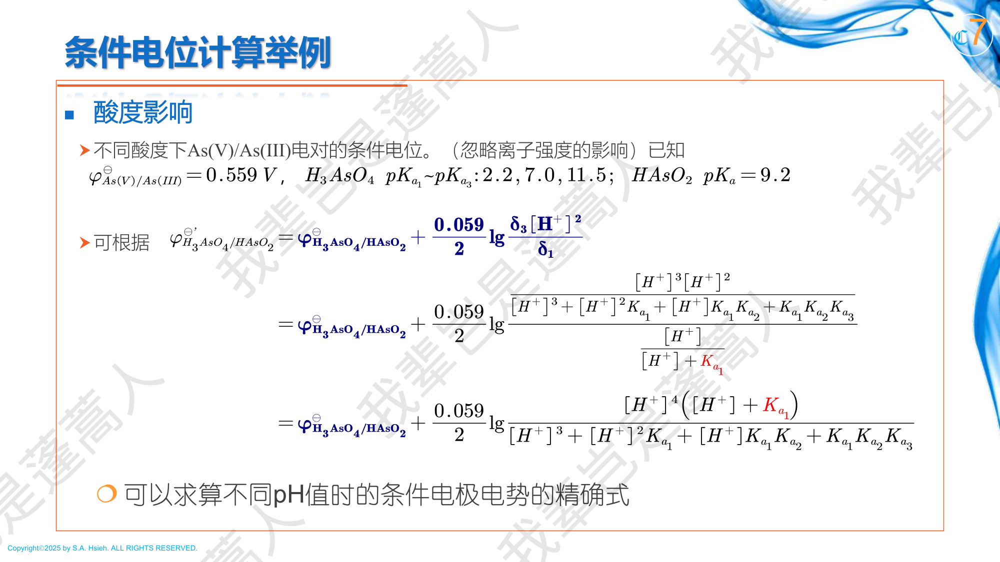
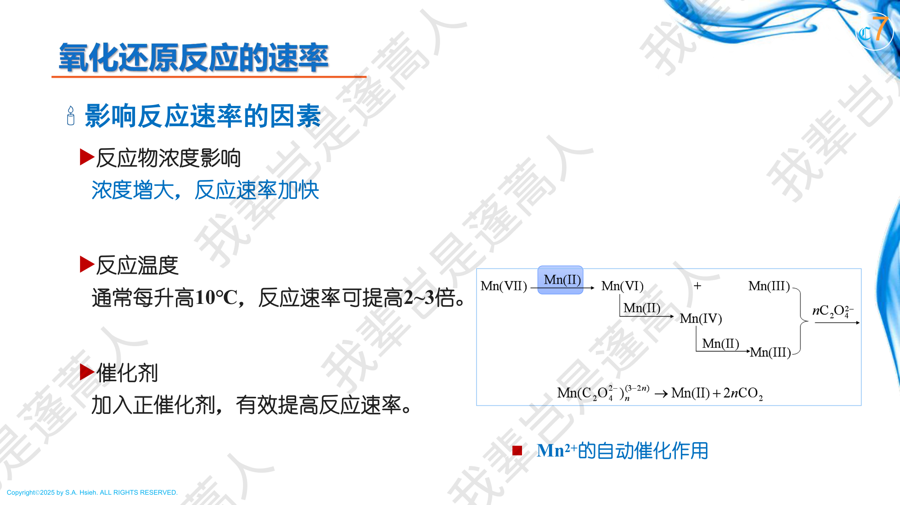
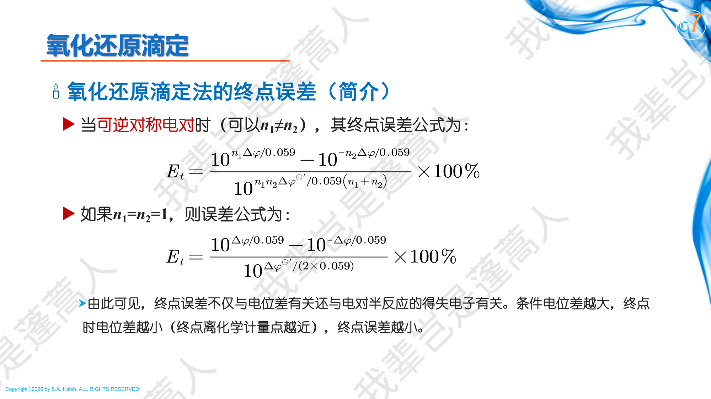
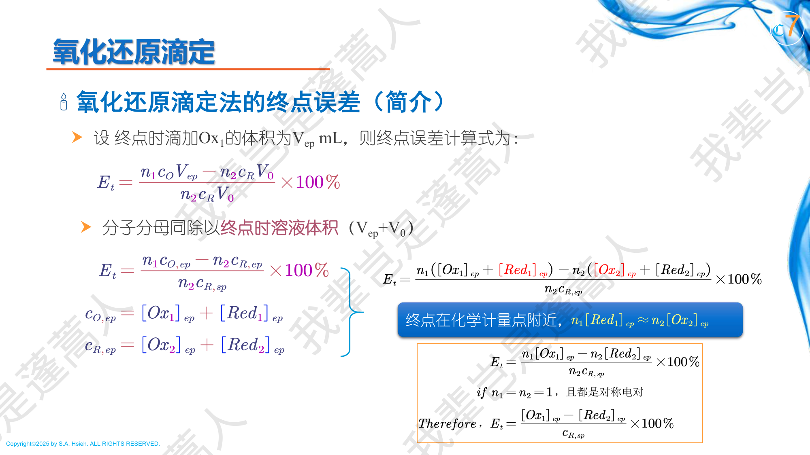
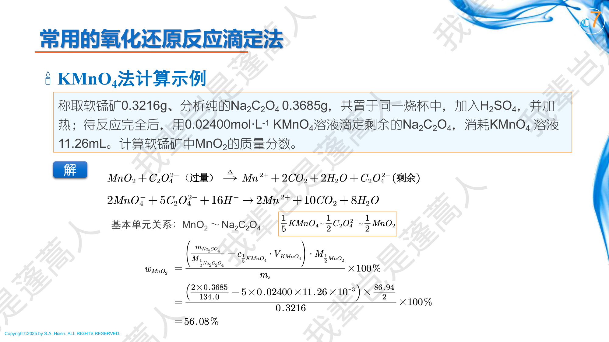
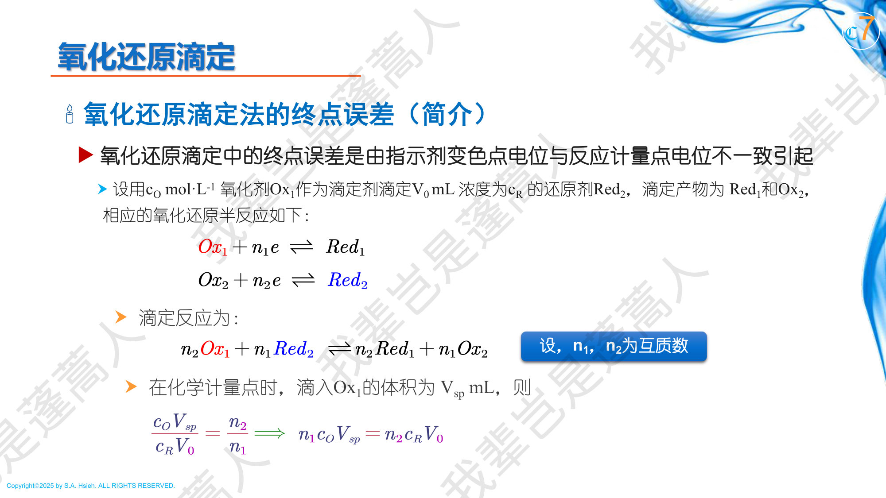
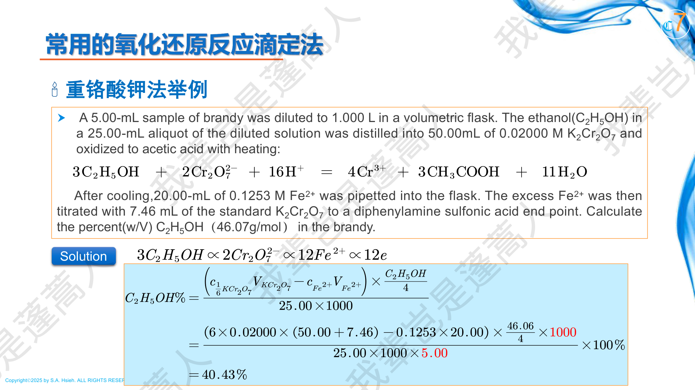
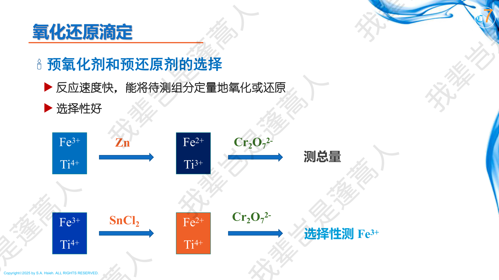

PPT: 可逆电对与不可逆电对

PPT: 条件电位的概念
根据电极反应能否在任一瞬间迅速建立氧化还原平衡，电对分为：
在反应的任一瞬间能迅速建立平衡，实测电位与 Nernst 方程计算值一致。
例：$\text{Fe}^{3+}/\text{Fe}^{2+}$、$\text{Ce}^{4+}/\text{Ce}^{3+}$、$\text{I}_2/\text{I}^-$
在反应的任一瞬间不能迅速建立平衡，实测电位与 Nernst 方程计算值不一致或相差很大。
例：$\text{MnO}_4^-/\text{Mn}^{2+}$、$\text{Cr}_2\text{O}_7^{2-}/\text{Cr}^{3+}$、$\text{CO}_2/\text{C}_2\text{O}_4^{2-}$、$\text{S}_4\text{O}_6^{2-}/\text{S}_2\text{O}_3^{2-}$
其中 $\varphi^0$ 为标准电极电位，$n$ 为电子转移数。严格地说，方程中的浓度应替换为活度 $a$。在实际分析中，由于活度系数和副反应的影响，需引入条件电位。
考虑电对 $\text{Ox} + ne^- \rightleftharpoons \text{Red}$，若 Ox 和 Red 都存在副反应（配位、沉淀、酸碱等），令：
则 $[\text{Ox}] = c_\text{Ox}/\alpha_\text{Ox}$，$[\text{Red}] = c_\text{Red}/\alpha_\text{Red}$，代入 Nernst 方程：
$$\varphi = \varphi^0 + \frac{0.0592}{n}\lg\frac{c_\text{Ox}/\alpha_\text{Ox}}{c_\text{Red}/\alpha_\text{Red}} = \varphi^0 + \frac{0.0592}{n}\lg\frac{\alpha_\text{Red}}{\alpha_\text{Ox}} + \frac{0.0592}{n}\lg\frac{c_\text{Ox}}{c_\text{Red}}$$条件电位考虑了离子强度、副反应（配位、酸碱等）对电对实际氧化还原能力的影响。
使用条件电位后 Nernst 方程变为：
$$\varphi = \varphi^{0'} + \frac{0.0592}{n}\lg\frac{c_{\text{Ox}}}{c_{\text{Red}}}$$
PPT: 酸度对条件电位的影响 -- As(V)/As(III)
对于 $\text{H}^+$ 直接参与的电对，如 $\text{H}_3\text{AsO}_4/\text{H}_3\text{AsO}_3$（$\varphi^0 = 0.559$ V），条件电位与 pH 密切相关。
将 Nernst 方程中的 $[\text{Ox}]$ 和 $[\text{Red}]$ 展开为总浓度和分布系数：
$$\varphi = \varphi^0_{\text{H}_3\text{AsO}_4/\text{H}_3\text{AsO}_3} + \frac{0.0592}{2}\lg\frac{\delta_{\text{H}_3\text{AsO}_4}}{\delta_{\text{H}_3\text{AsO}_3}} + \frac{0.0592}{2}\lg\frac{c_{\text{As(V)}}}{c_{\text{As(III)}}}$$其中 $\delta$ 为各存在形态的分布系数，与 pH 和酸的 $K_a$ 有关。因此：
$$\varphi^{0'} = \varphi^0 + \frac{0.0592}{2}\lg\frac{\delta_{\text{H}_3\text{AsO}_4}}{\delta_{\text{H}_3\text{AsO}_3}}$$当 pH 变化时，$\delta$ 值变化，条件电位随之改变。如 $\text{H}_3\text{AsO}_4$ 的 $pK_a$ 为 2.2, 7.0, 11.5，$\text{H}_3\text{AsO}_3$ 的 $pK_a$ 为 9.2，不同 pH 下分布分数差异很大。
已知 $\text{Fe}^{3+}/\text{Fe}^{2+}$ 的 $\varphi^0 = 0.771$ V。$\text{Fe}^{3+}$ 与 $\text{F}^-$ 的逐级稳定常数为 $\lg\beta_1=5.2$, $\lg\beta_2=9.2$, $\lg\beta_3=11.9$。$\text{Fe}^{2+}$ 与 $\text{F}^-$ 基本不配位（$\alpha_{\text{Fe(II)}} \approx 1$）。若 $[\text{F}^-] = 10^{-1.5}$ mol/L，求条件电位 $\varphi^{0'}$。
第一步：计算 $\text{Fe}^{3+}$ 的副反应系数
$$\alpha_{\text{Fe(III)}(\text{F})} = 1 + \beta_1[\text{F}^-] + \beta_2[\text{F}^-]^2 + \beta_3[\text{F}^-]^3$$ $$= 1 + 10^{5.2}\times 10^{-1.5} + 10^{9.2}\times 10^{-3.0} + 10^{11.9}\times 10^{-4.5}$$ $$= 1 + 10^{3.7} + 10^{6.2} + 10^{7.4}$$取最大项：$\alpha_{\text{Fe(III)}(\text{F})} \approx 10^{7.4}$
第二步：由于 $\text{Fe}^{2+}$ 与 $\text{F}^-$ 几乎不配位，$\alpha_{\text{Fe(II)}} \approx 1$
第三步：计算条件电位
$$\varphi^{0'} = \varphi^0 + \frac{0.0592}{1}\lg\frac{\alpha_\text{Red}}{\alpha_\text{Ox}} = 0.771 + 0.0592\times\lg\frac{1}{10^{7.4}}$$ $$= 0.771 + 0.0592\times(-7.4) = 0.771 - 0.438 = \boxed{0.333\;\text{V}}$$条件电位从 0.771 V 大幅降至 0.333 V，说明 $\text{F}^-$ 配位使 $\text{Fe}^{3+}$ 的氧化能力显著减弱。
邻菲罗啉（1,10-phenanthroline, phen）主要与 $\text{Fe}^{2+}$ 形成极稳定的 $[\text{Fe(phen)}_3]^{2+}$ 配合物（红色，ferroin），而与 $\text{Fe}^{3+}$ 的配合物较弱。定性分析条件电位如何变化。
phen 主要稳定 $\text{Fe}^{2+}$（还原态），故 $\alpha_\text{Red} \gg \alpha_\text{Ox}$。
$$\varphi^{0'} = \varphi^0 + \frac{0.0592}{1}\lg\frac{\alpha_\text{Red}}{\alpha_\text{Ox}} > \varphi^0$$条件电位升高（实际测定 $\varphi^{0'} \approx 1.06$ V）。这意味着 $\text{Fe}^{2+}$ 被 phen 稳定后，更难被氧化，相当于该电对的氧化能力增强。
这正是 ferroin 可用作 $\text{Ce}^{4+}/\text{Fe}^{2+}$ 滴定指示剂的原因（$\varphi^{0'}_\text{In} = 1.06$ V 恰好接近 $\varphi_{sp}$）。
在 $\text{K}_2\text{Cr}_2\text{O}_7$ 法测铁中，滴定前加入 $\text{H}_3\text{PO}_4$。已知 $\text{H}_3\text{PO}_4$ 与 $\text{Fe}^{3+}$ 形成 $\text{Fe(HPO}_4)^+$ 等无色配合物（$\lg\beta \approx 9.4$），而与 $\text{Fe}^{2+}$ 配合能力很弱。分析其作用。
加入 $\text{H}_3\text{PO}_4$ 后：
这就是为什么 $\text{K}_2\text{Cr}_2\text{O}_7$ 法测铁要使用 $\text{H}_2\text{SO}_4 + \text{H}_3\text{PO}_4$ 混合酸。
考虑反应 $n_2\text{Ox}_1 + n_1\text{Red}_2 \rightleftharpoons n_2\text{Red}_1 + n_1\text{Ox}_2$
其中电对1: $\text{Ox}_1 + n_1 e^- \rightleftharpoons \text{Red}_1$，$\varphi_1^{0'}$；
电对2: $\text{Ox}_2 + n_2 e^- \rightleftharpoons \text{Red}_2$，$\varphi_2^{0'}$。
在平衡时，两个电对的电位相等（$\varphi_1 = \varphi_2$）：
$$\varphi_1^{0'} + \frac{0.0592}{n_1}\lg\frac{c_{\text{Ox}_1}}{c_{\text{Red}_1}} = \varphi_2^{0'} + \frac{0.0592}{n_2}\lg\frac{c_{\text{Ox}_2}}{c_{\text{Red}_2}}$$两边同乘 $n_1 n_2 / 0.0592$，经整理可得：
其中 $n = n_1 \cdot n_2$（当电子转移数互质时），或更一般地 $n$ 为反应中实际电子转移总数（即 $n_1$ 和 $n_2$ 的最小公倍数）。
（对 $n_1 = n_2 = 1$ 的情况，此时 $\lg K \geq 6.8$）
一般来说，$\lg K \geq 6$ 即可认为反应定量完成（反应完成度 $\geq 99.9\%$）。
反应完全度是衡量化学计量点时反应完成程度的指标。对于 $n_1 = n_2 = 1$ 的对称反应（等浓度）：
$$\text{完成度} = 1 - \frac{c_{sp,\text{Red}_2}}{c_0} \approx 1 - \frac{1}{\sqrt{K}}$$当 $\lg K \geq 6$ 时，完成度 $\geq 99.9\%$，满足定量分析要求。
| $\lg K$ | 完成度 | 能否用于滴定 |
|---|---|---|
| 3 | 96.8% | 不能 |
| 4 | 99.0% | 勉强 |
| 6 | 99.9% | 可以 |
| 8 | 99.99% | 优秀 |
| 反应 | $\varphi_1^{0'}$ / V | $\varphi_2^{0'}$ / V | $n$ | $\lg K$ |
|---|---|---|---|---|
| $\text{Ce}^{4+} + \text{Fe}^{2+}$ | 1.44 | 0.68 | 1 | 12.8 |
| $\text{MnO}_4^- + 5\text{Fe}^{2+}$ | 1.51 | 0.68 | 5 | 70.1 |
| $\text{Cr}_2\text{O}_7^{2-} + 6\text{Fe}^{2+}$ | 1.33 | 0.68 | 6 | 65.9 |
| $\text{I}_2 + 2\text{S}_2\text{O}_3^{2-}$ | 0.545 | 0.08 | 2 | 15.7 |
| $2\text{Cu}^{2+} + 4\text{I}^-$ | 0.16(CuI) | 0.545 | 2 | — |
在 1 mol/L $\text{H}_2\text{SO}_4$ 中，$\varphi^{0'}_{\text{Ce}^{4+}/\text{Ce}^{3+}} = 1.44$ V，$\varphi^{0'}_{\text{Fe}^{3+}/\text{Fe}^{2+}} = 0.68$ V。判断能否定量滴定。
$n_1 = n_2 = 1$，$n = 1$
$$\lg K = \frac{1 \times (1.44 - 0.68)}{0.0592} = \frac{0.76}{0.0592} = 12.8$$$\lg K = 12.8 \gg 6$，因此 $\text{Ce}^{4+}$ 完全可以定量滴定 $\text{Fe}^{2+}$。
同时 $\Delta\varphi^{0'} = 0.76 \;\text{V} > 0.4\;\text{V}$，满足判据。
已知 $\varphi^0_{\text{I}_2/\text{I}^-} = 0.545$ V，$\varphi^0_{\text{S}_4\text{O}_6^{2-}/\text{S}_2\text{O}_3^{2-}} = 0.08$ V。判断 $\text{I}_2$ 能否定量滴定 $\text{S}_2\text{O}_3^{2-}$。
反应：$\text{I}_2 + 2\text{S}_2\text{O}_3^{2-} \rightarrow 2\text{I}^- + \text{S}_4\text{O}_6^{2-}$
$n_1 = 2$（I2 得 2 个电子），$n_2 = 2$（2 个 S2O32- 共失 2 个电子），$n = 2$
$$\lg K = \frac{2 \times (0.545 - 0.08)}{0.0592} = \frac{2 \times 0.465}{0.0592} = 15.7$$$\lg K = 15.7 \gg 6$，反应非常完全，$\text{I}_2$ 可以定量滴定 $\text{S}_2\text{O}_3^{2-}$。
这就是碘量法中用 $\text{Na}_2\text{S}_2\text{O}_3$ 标准溶液滴定 $\text{I}_2$ 的理论基础。

PPT: 氧化还原滴定曲线
反应：$\text{Ce}^{4+} + \text{Fe}^{2+} \rightarrow \text{Ce}^{3+} + \text{Fe}^{3+}$，$n_1 = n_2 = 1$
设 $\varphi^{0'}_{\text{Ce}} = 1.44$ V，$\varphi^{0'}_{\text{Fe}} = 0.68$ V
| 滴定百分数 | 计算方法 | $\varphi$ / V |
|---|---|---|
| 0%（起始） | 仅有 $\text{Fe}^{2+}$，加微量 $\text{Fe}^{3+}$ 约 $10^{-5}$ M | $\approx 0.38$ |
| 50% | $\varphi = 0.68 + 0.0592\lg\dfrac{50}{50} = 0.68$ | 0.68 |
| 99.9% | $\varphi = 0.68 + 0.0592\lg\dfrac{99.9}{0.1} = 0.68 + 0.0592\times 3 = 0.86$ | 0.86 |
| 100%（SP） | $\varphi_{sp} = \dfrac{0.68 + 1.44}{2} = 1.06$ | 1.06 |
| 100.1% | $\varphi = 1.44 + 0.0592\lg\dfrac{0.1}{99.9} = 1.44 - 0.0592\times 3 = 1.26$ | 1.26 |
| 200% | $\varphi = 1.44 + 0.0592\lg\dfrac{100}{100} = 1.44$ | 1.44 |
从 99.9% 到 100.1%（即 $\pm 0.1\%$ 的滴定误差对应范围）：
$$\text{突跃} = 0.86 \;\text{V} \sim 1.26\;\text{V} \quad (\Delta\varphi = 0.40\;\text{V})$$一般公式：对称曲线的突跃范围约为 $\varphi^{0'}_2 + 3\times\frac{0.0592}{n_2}$ 到 $\varphi^{0'}_1 - 3\times\frac{0.0592}{n_1}$
对 $\text{Ce}^{4+}/\text{Fe}^{2+}$ 体系（$n_1 = n_2 = 1$）：
$$\varphi_{sp} = \frac{0.68 + 1.44}{2} = 1.06\;\text{V}$$反应：$\text{MnO}_4^- + 5\text{Fe}^{2+} + 8\text{H}^+ \rightarrow \text{Mn}^{2+} + 5\text{Fe}^{3+} + 4\text{H}_2\text{O}$
$n_1 = 5$（MnO4- 得 5e），$n_2 = 1$（Fe2+ 失 1e）
$\varphi_{sp} = 1.37$ V 明显偏向高电位端（$\text{MnO}_4^-$ 一侧），这就是不对称曲线的特征。
| 特征 | 对称（$n_1=n_2$） | 不对称（$n_1 \neq n_2$） |
|---|---|---|
| 化学计量点位置 | 突跃中央 | 偏向 $n$ 大的一侧 |
| $\varphi_{sp}$ 计算 | $\frac{\varphi_1^{0'}+\varphi_2^{0'}}{2}$ | $\frac{n_1\varphi_1^{0'}+n_2\varphi_2^{0'}}{n_1+n_2}$ |
| 典型例子 | $\text{Ce}^{4+}/\text{Fe}^{2+}$ | $\text{MnO}_4^-/\text{Fe}^{2+}$ |
| 指示剂选择 | 较灵活 | 需注意偏向 |
突跃范围由 $\pm 0.1\%$ 的滴定误差所对应的电位变化定义：
$\varphi_{sp} = \frac{1 \times 1.44 + 1 \times 0.68}{1+1} = 1.06\;\text{V}$
$\lg K = \frac{1 \times (1.44 - 0.68)}{0.0592} = \frac{0.76}{0.0592} = 12.8$
$K$ 非常大，反应完全定量。
突跃下限：$\varphi_{99.9\%} = 0.68 + 3 \times 0.0592 = 0.86\;\text{V}$
突跃上限：$\varphi_{100.1\%} = 1.44 - 3 \times 0.0592 = 1.26\;\text{V}$
突跃范围：$0.86 \sim 1.26\;\text{V}$，可选用 ferroin（$\varphi^{0'}_\text{In} = 1.06$ V）作指示剂。

PPT: 氧化还原滴定终点误差

PPT: 终点误差的详细推导
其中 $\Delta\varphi = \varphi_{ep} - \varphi_{sp}$（指示剂变色点电位与化学计量点电位之差）。
分析：
滴定剂本身有颜色变化。最典型：$\text{KMnO}_4$（$\text{MnO}_4^-$ 紫红色，$\text{Mn}^{2+}$ 几乎无色）。滴定终点多半滴 $\text{KMnO}_4$ 即呈粉红色。
淀粉指示剂：用于碘量法，淀粉与 $\text{I}_2$ 形成深蓝色吸附化合物。
$\text{Fe(SCN)}^{2+}$ 指示剂：$\text{Sn}^{2+} + 2\text{Fe}^{3+} = 2\text{Fe}^{2+} + \text{Sn}^{4+}$ 反应中，加入 $\text{SCN}^-$，当有 $\text{Fe}^{3+}$ 存在时显红色（$\text{Fe(SCN)}^{2+}$），还原完全后红色消失。这是一种利用特定反应产物颜色变化的特殊指示剂。
其氧化态和还原态颜色不同，变色取决于溶液电位：
$$\varphi = \varphi^{0'}_{In} + \frac{0.0592}{n}\lg\frac{[\text{In}_{\text{Ox}}]}{[\text{In}_{\text{Red}}]}$$变色范围：$\varphi^{0'}_{In} \pm \frac{0.0592}{n}$
| 指示剂 | $\varphi^{0'}$/V | 颜色（氧化态/还原态） |
|---|---|---|
| 二苯胺磺酸钠 | 0.84 | 紫色/无色 |
| 邻二氮菲亚铁（ferroin） | 1.06 | 淡蓝/红色 |
| 次甲基蓝 | 0.53 | 蓝色/无色 |
滴定前需将待测物定量转化为某一特定氧化态，称为预处理。
| 氧化剂 | 用途 | 除去过量的方法 |
|---|---|---|
| $(\text{NH}_4)_2\text{S}_2\text{O}_8$（过硫酸铵） | 氧化 $\text{Mn}^{2+}$ 为 $\text{MnO}_4^-$, $\text{Cr}^{3+}$ 为 $\text{Cr}_2\text{O}_7^{2-}$ | 煮沸分解 |
| $\text{NaBiO}_3$（铋酸钠） | 氧化 $\text{Mn}^{2+}$ 为 $\text{MnO}_4^-$ | 过滤除去（不溶性固体） |
| $\text{HClO}_4$（高氯酸） | 高温下的强氧化剂 | 稀释冷却后失去氧化性 |
| $\text{H}_2\text{O}_2$ | 氧化多种还原态离子 | 煮沸分解 |
| 还原剂 | 用途 | 除去过量的方法 |
|---|---|---|
| $\text{SnCl}_2$ | 还原 $\text{Fe}^{3+}$ 为 $\text{Fe}^{2+}$ | 加 $\text{HgCl}_2$（见铁的测定） |
| Jones 还原器（锌汞齐） | 还原多种金属离子 | 通过分离 |
| 银还原器 | 选择性还原 $\text{Fe}^{3+}$ | 通过分离 |
在 $\text{K}_2\text{Cr}_2\text{O}_7$ 法测铁中，需将 $\text{Fe}^{3+}$ 预还原为 $\text{Fe}^{2+}$：
边加边摇匀，观察溶液颜色由深黄色逐渐变浅。当溶液变为浅黄色或接近无色时，再多加 1~2 滴（稍过量），停止加入。
$\text{Sn}^{2+} + 2\text{HgCl}_2 \rightarrow \text{Sn}^{4+} + \text{Hg}_2\text{Cl}_2\downarrow$（白色丝状沉淀）
$\text{Hg}_2\text{Cl}_2$（甘汞）不与 $\text{K}_2\text{Cr}_2\text{O}_7$ 反应，不干扰滴定。
$\text{Sn}^{2+} + \text{Hg}_2\text{Cl}_2 \rightarrow \text{Sn}^{4+} + 2\text{Hg}\downarrow(\text{灰黑色}) + 2\text{Cl}^-$
金属 Hg 能还原 $\text{K}_2\text{Cr}_2\text{O}_7$，导致结果偏高。必须弃去重做。
PPT: 高锰酸钾法
$\text{KMnO}_4$ 在强酸性介质中：$\text{MnO}_4^- + 8\text{H}^+ + 5e^- \rightarrow \text{Mn}^{2+} + 4\text{H}_2\text{O}$，$\varphi^0 = 1.51$ V
自身指示剂：终点溶液呈粉红色（0.02 mL 0.02 mol/L $\text{KMnO}_4$ 可使 50 mL 溶液显色）。
反应：$2\text{MnO}_4^- + 5\text{C}_2\text{O}_4^{2-} + 16\text{H}^+ \rightarrow 2\text{Mn}^{2+} + 10\text{CO}_2 + 8\text{H}_2\text{O}$
$\text{HNO}_3$ 本身是氧化性酸，在加热条件下会氧化 $\text{C}_2\text{O}_4^{2-}$（或其他还原性被测物），导致 $\text{KMnO}_4$ 用量偏少，结果偏低。
将含 $\text{Ca}^{2+}$ 的溶液用 $(\text{NH}_4)_2\text{C}_2\text{O}_4$ 沉淀为 $\text{CaC}_2\text{O}_4$，过滤洗涤后用 $\text{H}_2\text{SO}_4$ 溶解，加热至 75~85 °C，用 0.02000 mol/L $\text{KMnO}_4$ 标准溶液滴定，消耗 25.00 mL。求 $\text{Ca}^{2+}$ 的物质的量。
$\text{CaC}_2\text{O}_4 \xrightarrow{\text{H}_2\text{SO}_4} \text{Ca}^{2+} + \text{C}_2\text{O}_4^{2-}$（酸溶）
$2\text{MnO}_4^- + 5\text{C}_2\text{O}_4^{2-} + 16\text{H}^+ \rightarrow 2\text{Mn}^{2+} + 10\text{CO}_2 + 8\text{H}_2\text{O}$
$n_{\text{MnO}_4^-} = 0.02000 \times 25.00 \times 10^{-3} = 5.000 \times 10^{-4}\;\text{mol}$
$n_{\text{C}_2\text{O}_4^{2-}} = \frac{5}{2} \times n_{\text{MnO}_4^-} = \frac{5}{2} \times 5.000 \times 10^{-4} = 1.250 \times 10^{-3}\;\text{mol}$
因 $\text{Ca}^{2+} : \text{C}_2\text{O}_4^{2-} = 1:1$（在 $\text{CaC}_2\text{O}_4$ 中），故：
$$n_{\text{Ca}^{2+}} = n_{\text{C}_2\text{O}_4^{2-}} = 1.250 \times 10^{-3}\;\text{mol}$$
PPT: KMnO4法测软锰矿
称取软锰矿 0.3216 g，分析纯 $\text{Na}_2\text{C}_2\text{O}_4$ 0.3685 g，共置于同一烧杯中，加入 $\text{H}_2\text{SO}_4$，加热使反应完全，用 0.02400 mol/L $\text{KMnO}_4$ 溶液滴定剩余 $\text{Na}_2\text{C}_2\text{O}_4$，消耗 11.26 mL。求软锰矿中 $\text{MnO}_2$ 的质量分数。
原理：$\text{MnO}_2$ 先与过量 $\text{Na}_2\text{C}_2\text{O}_4$ 反应：
$\text{MnO}_2 + \text{C}_2\text{O}_4^{2-} + 4\text{H}^+ \rightarrow \text{Mn}^{2+} + 2\text{CO}_2 + 2\text{H}_2\text{O}$（剩余 $\text{C}_2\text{O}_4^{2-}$）
再用 $\text{KMnO}_4$ 滴定剩余的 $\text{C}_2\text{O}_4^{2-}$：
$2\text{MnO}_4^- + 5\text{C}_2\text{O}_4^{2-} + 16\text{H}^+ \rightarrow 2\text{Mn}^{2+} + 10\text{CO}_2 + 8\text{H}_2\text{O}$
计算：基本单元关系 $\text{MnO}_2 \sim \text{Na}_2\text{C}_2\text{O}_4$（1:1），$\text{KMnO}_4 \sim \frac{5}{2}\text{C}_2\text{O}_4^{2-}$
$n_{\text{C}_2\text{O}_4^{2-},\text{total}} = \frac{0.3685}{134.0} = 2.750 \times 10^{-3}\;\text{mol}$
$n_{\text{C}_2\text{O}_4^{2-},\text{excess}} = \frac{5}{2} \times n_{\text{KMnO}_4} = \frac{5}{2} \times 0.02400 \times 11.26 \times 10^{-3} = 6.756 \times 10^{-4}\;\text{mol}$
$n_{\text{MnO}_2} = n_{\text{C}_2\text{O}_4^{2-},\text{total}} - n_{\text{C}_2\text{O}_4^{2-},\text{excess}} = 2.750 \times 10^{-3} - 6.756 \times 10^{-4} = 2.074 \times 10^{-3}\;\text{mol}$
$$w(\text{MnO}_2) = \frac{2.074 \times 10^{-3} \times 86.94}{0.3216} \times 100\% = 56.0\%$$
PPT: 重铬酸钾法
$\text{Cr}_2\text{O}_7^{2-} + 14\text{H}^+ + 6e^- \rightarrow 2\text{Cr}^{3+} + 7\text{H}_2\text{O}$，$\varphi^0 = 1.33$ V
$\text{Sn}^{2+} + 2\text{Fe}^{3+} \rightarrow \text{Sn}^{4+} + 2\text{Fe}^{2+}$
$\text{Sn}^{2+} + 2\text{HgCl}_2 \rightarrow \text{Sn}^{4+} + \text{Hg}_2\text{Cl}_2\downarrow(\text{白色})$
$n_{Cr_2O_7^{2-}} = 0.01667 \times 35.20 \times 10^{-3} = 5.868 \times 10^{-4}\;\text{mol}$
$\text{Cr}_2\text{O}_7^{2-} + 6\text{Fe}^{2+} + 14\text{H}^+ \rightarrow 2\text{Cr}^{3+} + 6\text{Fe}^{3+} + 7\text{H}_2\text{O}$
$n_{Fe} = 6 \times n_{Cr_2O_7^{2-}} = 6 \times 5.868 \times 10^{-4} = 3.521 \times 10^{-3}\;\text{mol}$
$w_{Fe} = \frac{3.521 \times 10^{-3} \times 55.85}{0.5000} \times 100\% = 39.34\%$

PPT: K2Cr2O7法应用实例
取白兰地样品 5.00 mL，稀释至 1.000 L。取稀释液 25.00 mL 蒸馏至 50.00 mL $\text{K}_2\text{Cr}_2\text{O}_7$ 标准溶液（0.02000 mol/L）中。加热氧化乙醇为乙酸：
$$3\text{C}_2\text{H}_5\text{OH} + 2\text{Cr}_2\text{O}_7^{2-} + 16\text{H}^+ \rightarrow 4\text{Cr}^{3+} + 3\text{CH}_3\text{COOH} + 11\text{H}_2\text{O}$$冷却后加入 0.1253 mol/L $\text{FeSO}_4$ 标准溶液 20.00 mL（过量），用 7.46 mL 0.02000 mol/L $\text{K}_2\text{Cr}_2\text{O}_7$ 标准溶液返滴定至二苯胺磺酸钠终点。
计量关系：$3\text{C}_2\text{H}_5\text{OH} \sim 2\text{Cr}_2\text{O}_7^{2-} \sim 12\text{Fe}^{2+} \sim 12e$
与乙醇反应的 $\text{Cr}_2\text{O}_7^{2-}$：
利用电子守恒：$n_e(\text{Cr}_2\text{O}_7^{2-},\text{total}) = n_e(\text{C}_2\text{H}_5\text{OH}) + n_e(\text{Fe}^{2+}) - n_e(\text{Cr}_2\text{O}_7^{2-},\text{back})$
$$n_{\text{C}_2\text{H}_5\text{OH}} = \frac{(6\times 0.02000\times(50.00+7.46) - 0.1253\times 20.00) \times \frac{46.07}{4}}{25.00 \times 1000 \times 5.00} \times 1000$$最终 $w(\text{C}_2\text{H}_5\text{OH}) = 40.43\%$（v/v）。

PPT: 碘量法的原理与分类
$\text{I}_2 + 2e^- \rightleftharpoons 2\text{I}^-$，$\varphi^0 = 0.545$ V
碘量法利用 $\text{I}_2/\text{I}^-$ 电对的中等电位，可进行两类滴定：
用 $\text{I}_2$ 标准溶液直接滴定还原性物质（$\varphi^{0'} < 0.545$ V 的电对）。
例：测 $\text{As}(\text{III})$, $\text{Sn}^{2+}$, $\text{SO}_3^{2-}$, 抗坏血酸等。
淀粉指示剂在开始时即可加入，终点为溶液由无色变为蓝色。
用还原性物质 $\text{I}^-$（过量 KI）与氧化性物质反应，析出定量 $\text{I}_2$，再用 $\text{Na}_2\text{S}_2\text{O}_3$ 标准溶液滴定。
$\text{I}_2 + 2\text{S}_2\text{O}_3^{2-} \rightarrow 2\text{I}^- + \text{S}_4\text{O}_6^{2-}$
例：测 $\text{Cu}^{2+}$, $\text{Cr}_2\text{O}_7^{2-}$, 溶解氧, $\text{H}_2\text{O}_2$ 等。
淀粉指示剂在近终点时加入（溶液变浅黄色时），终点为蓝色褪去变无色。
$\text{Na}_2\text{S}_2\text{O}_3 \cdot 5\text{H}_2\text{O}$ 不是基准物质（含结晶水量不确定，且可被细菌分解、空气氧化），需标定。
| 步骤 | 原因 |
|---|---|
| 使用新煮沸并冷却的蒸馏水 | 煮沸除去水中溶解的 $\text{CO}_2$ 和 $\text{O}_2$，杀灭细菌。$\text{CO}_2$ 使溶液偏酸导致 $\text{S}_2\text{O}_3^{2-}$ 分解；$\text{O}_2$ 会氧化 $\text{S}_2\text{O}_3^{2-}$；细菌（硫杆菌）能分解 $\text{S}_2\text{O}_3^{2-}$ |
| 加入少量 $\text{Na}_2\text{CO}_3$（约 0.1 g/L） | 保持溶液微碱性（pH $\approx$ 9~10），抑制分解反应 $\text{S}_2\text{O}_3^{2-} + 2\text{H}^+ \rightarrow \text{S}\downarrow + \text{SO}_2 + \text{H}_2\text{O}$ |
| 保存于棕色瓶中 | 避免光照加速分解 |
| 放置 1~2 周后标定 | 等待浓度稳定（初配制后浓度会缓慢变化） |
$\text{Cr}_2\text{O}_7^{2-} + 6\text{I}^- + 14\text{H}^+ \rightarrow 2\text{Cr}^{3+} + 3\text{I}_2 + 7\text{H}_2\text{O}$
计量关系：$\text{Cr}_2\text{O}_7^{2-} \sim 3\text{I}_2 \sim 6\text{S}_2\text{O}_3^{2-}$
| 误差来源 | 影响 | 防止措施 |
|---|---|---|
| $\text{I}_2$ 挥发 | 结果偏低 | 加过量 KI（形成 $\text{I}_3^-$）；密塞；快速滴定 |
| $\text{I}^-$ 被空气氧化 $4\text{I}^- + \text{O}_2 + 4\text{H}^+ \rightarrow 2\text{I}_2 + 2\text{H}_2\text{O}$ | 结果偏高 | 避免强酸性；避免阳光直射；反应后立即滴定；不要剧烈摇动 |
| 淀粉加入过早（间接碘量法） | 终点拖后 | 溶液变浅黄色时再加 |
| $\text{Na}_2\text{S}_2\text{O}_3$ 在酸中分解 | 浓度不准 | $\text{Na}_2\text{S}_2\text{O}_3$ 不可在酸性中使用；标定时先加 KI 和酸使析碘反应在酸性中完成，滴定在微酸性即可 |
| CuI 吸附 $\text{I}_2$（测铜时） | 结果偏低 | 近终点加 KSCN |
反应：$2\text{Cu}^{2+} + 4\text{I}^- \rightarrow 2\text{CuI}\downarrow + \text{I}_2$
生成的 $\text{I}_2$ 用 $\text{Na}_2\text{S}_2\text{O}_3$ 滴定。
$\text{CuI} + \text{SCN}^- \rightarrow \text{CuSCN}\downarrow + \text{I}^-$
CuSCN 比 CuI 更不溶（$K_{sp}$ 更小），从 CuI 沉淀表面释放被吸附的 $\text{I}_2$。加入 KSCN 后蓝色可能重新加深。
利用某些反应中电子转移倍数不同实现信号放大。例如：
$\text{IO}_3^- + 5\text{I}^- + 6\text{H}^+ \rightarrow 3\text{I}_2 + 3\text{H}_2\text{O}$
1 mol $\text{IO}_3^-$ 产生 3 mol $\text{I}_2$，消耗 6 mol $\text{Na}_2\text{S}_2\text{O}_3$，实现 6 倍放大。
在 $\text{K}_2\text{Cr}_2\text{O}_7$ 法测定铁含量时，滴定前加入 $\text{H}_2\text{SO}_4$-$\text{H}_3\text{PO}_4$ 混合酸，下列说法中正确的有？
A. $\text{H}_2\text{SO}_4$ 提供酸性介质 B. $\text{H}_3\text{PO}_4$ 与 $\text{Fe}^{3+}$ 配合消除黄色干扰 C. $\text{H}_3\text{PO}_4$ 降低 $\text{Fe}^{3+}/\text{Fe}^{2+}$ 条件电位 D. 使突跃范围增大
间接碘量法（滴定碘法）中，淀粉指示剂应何时加入？
原因：若过早加入，大量 $\text{I}_2$ 与淀粉形成深蓝色包合物，$\text{I}_2$ 被紧密吸附在淀粉螺旋结构内，不易被 $\text{Na}_2\text{S}_2\text{O}_3$ 释放出来，导致终点拖后，滴定误差增大。
注意：在直接碘滴定法中，淀粉指示剂可在开始时加入（因为开始时溶液中没有 $\text{I}_2$，不存在吸附问题）。
$\text{Ce}^{4+}$ 滴定 $\text{Fe}^{2+}$ 的滴定曲线为对称曲线，原因是什么？
因为两个电对的电子转移数相同：$n_1 = n_2 = 1$
$\text{Ce}^{4+} + e^- \rightarrow \text{Ce}^{3+}$ ($n_1 = 1$)
$\text{Fe}^{3+} + e^- \rightarrow \text{Fe}^{2+}$ ($n_2 = 1$)
当 $n_1 = n_2$ 时，$\varphi_{sp} = \frac{\varphi_1^{0'} + \varphi_2^{0'}}{2}$，化学计量点恰在突跃范围中央，曲线关于 SP 对称。
称取钢样 1.000 g，用酸溶解后将 Cr 氧化为 $\text{Cr}_2\text{O}_7^{2-}$，恰好转入 250 mL 容量瓶中。取 25.00 mL 试液，加入 0.1000 mol/L $\text{FeSO}_4$ 标准溶液 25.00 mL（过量），用 0.01800 mol/L $\text{KMnO}_4$ 标准溶液返滴定剩余 $\text{Fe}^{2+}$，消耗 7.00 mL。求钢中 Cr 的质量分数 $w(\text{Cr})$。
第一步：写出反应方程式
$\text{Cr}_2\text{O}_7^{2-} + 6\text{Fe}^{2+} + 14\text{H}^+ \rightarrow 2\text{Cr}^{3+} + 6\text{Fe}^{3+} + 7\text{H}_2\text{O}$ ...(1)
$\text{MnO}_4^- + 5\text{Fe}^{2+} + 8\text{H}^+ \rightarrow \text{Mn}^{2+} + 5\text{Fe}^{3+} + 4\text{H}_2\text{O}$ ...(2)
第二步：计算各物质的量
$n_{\text{Fe}^{2+},\text{total}} = 0.1000 \times 25.00 \times 10^{-3} = 2.500 \times 10^{-3}\;\text{mol}$
返滴定消耗：$n_{\text{MnO}_4^-} = 0.01800 \times 7.00 \times 10^{-3} = 1.260 \times 10^{-4}\;\text{mol}$
剩余 $\text{Fe}^{2+}$：$n_{\text{Fe}^{2+},\text{excess}} = 5 \times n_{\text{MnO}_4^-} = 5 \times 1.260 \times 10^{-4} = 6.300 \times 10^{-4}\;\text{mol}$
第三步：与 $\text{Cr}_2\text{O}_7^{2-}$ 反应的 $\text{Fe}^{2+}$
$n_{\text{Fe}^{2+},\text{reacted}} = 2.500 \times 10^{-3} - 6.300 \times 10^{-4} = 1.870 \times 10^{-3}\;\text{mol}$
第四步：计算 Cr 的量（注意 25.00 mL 是 250 mL 的 1/10）
由反应(1)：$n_{\text{Cr}_2\text{O}_7^{2-}} = \frac{1}{6} \times n_{\text{Fe}^{2+},\text{reacted}} = \frac{1.870 \times 10^{-3}}{6} = 3.117 \times 10^{-4}\;\text{mol}$
$n_{\text{Cr}} = 2 \times n_{\text{Cr}_2\text{O}_7^{2-}} = 2 \times 3.117 \times 10^{-4} = 6.233 \times 10^{-4}\;\text{mol}$（取 25.00 mL 中的）
总量（250 mL）：$n_{\text{Cr},\text{total}} = 6.233 \times 10^{-4} \times 10 = 6.233 \times 10^{-3}\;\text{mol}$
$$w(\text{Cr}) = \frac{6.233 \times 10^{-3} \times 52.00}{1.000} \times 100\% = \boxed{3.24\%}$$$\text{K}_2\text{Cr}_2\text{O}_7$ 法测铁时，加入 $\text{H}_2\text{SO}_4$-$\text{H}_3\text{PO}_4$ 混合酸的目的是什么？
用 $\text{KMnO}_4$ 标准溶液滴定 $\text{C}_2\text{O}_4^{2-}$ 时，为什么不能用 HCl 作酸性介质？
两个原因：
因此 $\text{KMnO}_4$ 法只能使用 $\text{H}_2\text{SO}_4$。
在 1 mol/L $\text{H}_2\text{SO}_4$ 中，用 $\text{Ce}^{4+}$（$\varphi^{0'} = 1.44$ V）滴定 $\text{Fe}^{2+}$（$\varphi^{0'} = 0.68$ V），当滴定至 50% 时，溶液电位为多少？
滴定 50% 时，$\text{Fe}^{2+}$ 被氧化了一半：$[\text{Fe}^{3+}] = [\text{Fe}^{2+}]$
$$\varphi = \varphi^{0'}_{\text{Fe}^{3+}/\text{Fe}^{2+}} + 0.0592\lg\frac{[\text{Fe}^{3+}]}{[\text{Fe}^{2+}]} = 0.68 + 0.0592\lg 1 = \boxed{0.68\;\text{V}}$$化学计量点前的电位由被滴定物的电对控制。50% 时恰好 $[\text{Ox}] = [\text{Red}]$，$\lg$ 项为零，电位等于该电对的条件电位。
已知 $\text{Fe}^{3+}/\text{Fe}^{2+}$ 电对 $\varphi^0 = 0.771$ V。在含 $\text{F}^-$ 的溶液中，$\text{Fe}^{3+}$ 与 $\text{F}^-$ 的累积稳定常数 $\lg\beta_1=5.2$, $\lg\beta_2=9.2$, $\lg\beta_3=11.9$。$\text{Fe}^{2+}$ 基本不与 $\text{F}^-$ 配位。若 $[\text{F}^-] = 10^{-1.5}$ mol/L，求条件电位。
$\alpha_{\text{Fe(III)}(\text{F})} = 1 + \beta_1[\text{F}^-] + \beta_2[\text{F}^-]^2 + \beta_3[\text{F}^-]^3$
$= 1 + 10^{5.2-1.5} + 10^{9.2-3.0} + 10^{11.9-4.5}$
$= 1 + 10^{3.7} + 10^{6.2} + 10^{7.4} \approx 10^{7.4}$
$\alpha_{\text{Fe(II)}} = 1$
$$\varphi^{0'} = 0.771 + 0.0592\lg\frac{1}{10^{7.4}} = 0.771 - 0.0592 \times 7.4 = 0.771 - 0.438 = \boxed{0.333\;\text{V}}$$$\text{F}^-$ 配位使电位大幅降低约 0.44 V。
| 考点 | 核心要点 | 常见陷阱 |
|---|---|---|
| 条件电位方向 | 配位氧化态 → $\varphi^{0'}$ 降低 配位还原态 → $\varphi^{0'}$ 升高 | 不要搞反方向 |
| 定量判据 | $\lg K \geq 6$ 或 $\Delta\varphi^{0'} \geq 0.4$ V（$n=1$） | $n$ 大时 $\Delta\varphi^{0'}$ 可更小 |
| 对称/不对称 | $n_1 = n_2$：对称；$n_1 \neq n_2$：不对称 | $\varphi_{sp}$ 公式中 $n$ 的加权 |
| 50% 处电位 | $\varphi = \varphi^{0'}_\text{被滴定物}$ | 不是化学计量点电位 |
| 200% 处电位 | $\varphi = \varphi^{0'}_\text{滴定剂}$ | — |
| KMnO4 酸介质 | 只能用 $\text{H}_2\text{SO}_4$ | HCl（诱导）、HNO3（氧化）均不可 |
| 淀粉加入时机 | 直接碘滴定法：开始时 间接碘量法：近终点时 | 两种方法的加入时机不同 |
| SnCl2+HgCl2 | 白色正常；无色重做；灰黑重做 | 灰黑色 Hg 会还原滴定剂 |
| KSCN 在碘量测铜中 | 转化 CuI → CuSCN 释放 I2 | 近终点时加，不是开始时加 |
| Na2S2O3 配制 | 煮沸水 + Na2CO3 + 棕色瓶 | 不能用新鲜蒸馏水直接配 |
在 $\text{H}_2\text{SO}_4$ 介质中用 $\text{KMnO}_4$（$\varphi^{0'} = 1.51$ V）滴定 $\text{Fe}^{2+}$（$\varphi^{0'} = 0.68$ V），求 $\varphi_{sp}$ 并说明其特征。
$\text{MnO}_4^- + 5\text{Fe}^{2+} + 8\text{H}^+ \rightarrow \text{Mn}^{2+} + 5\text{Fe}^{3+} + 4\text{H}_2\text{O}$
$n_1 = 5$（MnO4-），$n_2 = 1$（Fe2+）
$$\varphi_{sp} = \frac{5 \times 1.51 + 1 \times 0.68}{5 + 1} = \frac{8.23}{6} = 1.37\;\text{V}$$$\varphi_{sp} = 1.37$ V 明显偏向高电位端（$\text{MnO}_4^-$ 一侧）。曲线不对称，$n_1 > n_2$ 故偏向 $\varphi_1^{0'}$。
注意：$\text{KMnO}_4$ 为自身指示剂，不需额外加指示剂。
准确称取 $\text{K}_2\text{Cr}_2\text{O}_7$ 基准物 0.1500 g，溶解后加入过量 KI 和 HCl，暗处反应后用 $\text{Na}_2\text{S}_2\text{O}_3$ 溶液滴定，消耗 30.50 mL。求 $\text{Na}_2\text{S}_2\text{O}_3$ 的浓度。（$M_{\text{K}_2\text{Cr}_2\text{O}_7} = 294.2$ g/mol）
计量关系：$\text{Cr}_2\text{O}_7^{2-} \sim 3\text{I}_2 \sim 6\text{S}_2\text{O}_3^{2-}$
$n_{\text{K}_2\text{Cr}_2\text{O}_7} = \frac{0.1500}{294.2} = 5.098 \times 10^{-4}\;\text{mol}$
$n_{\text{S}_2\text{O}_3^{2-}} = 6 \times n_{\text{K}_2\text{Cr}_2\text{O}_7} = 6 \times 5.098 \times 10^{-4} = 3.059 \times 10^{-3}\;\text{mol}$
$$c_{\text{Na}_2\text{S}_2\text{O}_3} = \frac{3.059 \times 10^{-3}}{30.50 \times 10^{-3}} = \boxed{0.1003\;\text{mol/L}}$$含铜矿样 0.5000 g，溶解后取全部溶液，加过量 KI 使 $\text{Cu}^{2+}$ 反应完全，用 0.1000 mol/L $\text{Na}_2\text{S}_2\text{O}_3$ 标准溶液滴定析出的 $\text{I}_2$，消耗 24.00 mL。求 $w(\text{Cu})$。（$M_\text{Cu} = 63.55$）
$2\text{Cu}^{2+} + 4\text{I}^- \rightarrow 2\text{CuI}\downarrow + \text{I}_2$
$\text{I}_2 + 2\text{S}_2\text{O}_3^{2-} \rightarrow 2\text{I}^- + \text{S}_4\text{O}_6^{2-}$
总计量关系：$\text{Cu}^{2+} \sim \frac{1}{2}\text{I}_2 \sim \text{S}_2\text{O}_3^{2-}$，即 $n_{\text{Cu}^{2+}} = n_{\text{S}_2\text{O}_3^{2-}}$
$n_{\text{S}_2\text{O}_3^{2-}} = 0.1000 \times 24.00 \times 10^{-3} = 2.400 \times 10^{-3}\;\text{mol}$
$n_{\text{Cu}} = 2.400 \times 10^{-3}\;\text{mol}$
$$w(\text{Cu}) = \frac{2.400 \times 10^{-3} \times 63.55}{0.5000} \times 100\% = \boxed{30.50\%}$$